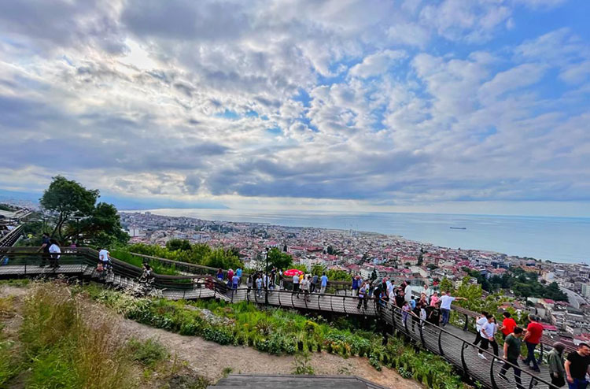

Trabzon'un Mirası
Trabzon Ayasofyası

Trabzon Ayasofyası, 13. yüzyılda inşa edilen ve Bizans dönemine ait önemli bir yapıdır. Kilise olarak inşa edilmiş, Osmanlı döneminde camiye dönüştürülmüş ve günümüzde müze olarak kullanılmaktadır.
Sümela Manastırı
Sümela Manastırı, Karadeniz'in dağlarında yer alan ve 4. yüzyıla kadar uzanan tarihiyle ünlü bir manastırdır. Doğal güzellikleri ve mimari yapısıyla ziyaretçileri etkileyen bir yapıdır.
Trabzon Kalesi
Trabzon Kalesi, şehrin tarihi savunma yapılarından biridir. Kale, Bizans, Komnenos ve Osmanlı dönemlerinden kalma bölümleri içerir.
Atatürk Köşkü

Atatürk'ün Trabzon ziyaretlerinde kaldığı ve bugün müze olarak kullanılan köşk, mimari yapısı ve tarihi eşyalarıyla dikkat çeker.
Boztepe
Boztepe, Trabzon'un tepelerinden birinde yer alan ve şehri kuşbakışı görebileceğiniz bir mesire alanıdır. Burada tarihi çay bahçeleri ve manzaralı yürüyüş yolları bulunur.